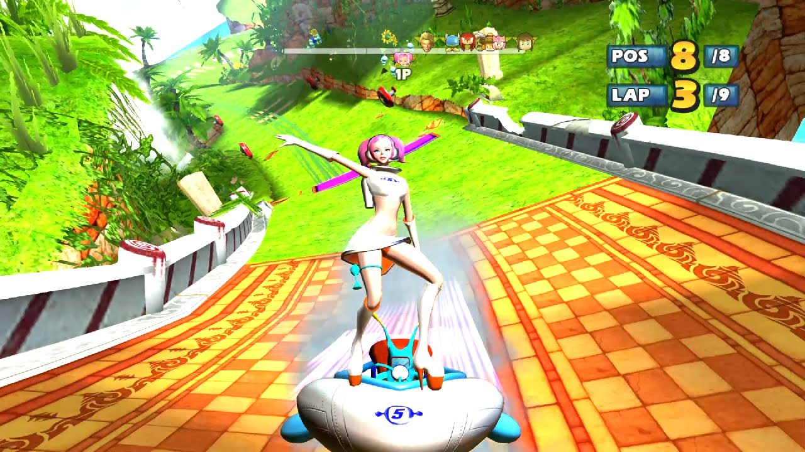
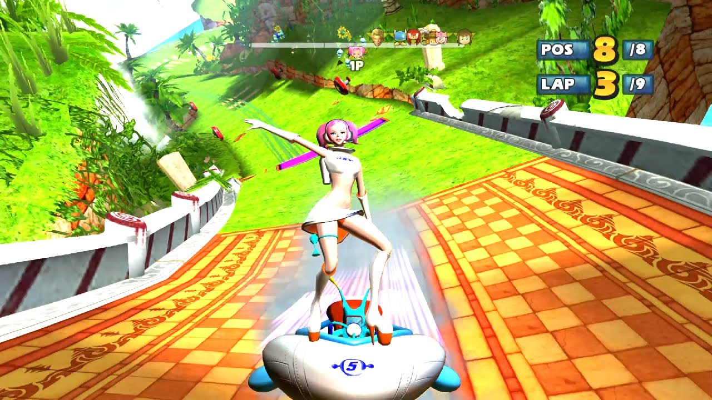

This kart racing game combining Sonic and Sega characters meshed into these unique and lively kart-racing tracks that made this game so exciting and unique compared to other games I’ve played. Mario Kart was popular but I wasn’t very skilled at it yet and was very immersed with playing this game on Xbox. This was something I played with my sister very often and I can recall bits and pieces of each racing map as well as the music tracks that played. The music was so upbeat and pretty good music to race to. I don’t have an Xbox anymore and I am realizing I really wish I could play this game again. My sister always chose to play as either Zobio & Zobiko (from Sega game The House of the Dead), or Dr. Eggman. My usual character choice was either Tails, or Ulala (from Sega game Space Channel 5). We would just race and try to beat each other until my sister got tired of playing since racing games have that repetitive aspect, but it was something I was happy to be repeating over and over since the racetracks, music and unique mesh of characters in the game was so cool to me.
want to know more about this game?
Sonic & Sega All-Stars Racing Fandom Wiki